Project A
프로젝트 소개AI를 활용해 Godot 엔진으로 직접 기획·개발하고 있는 덱 빌딩 로그라이크 프로젝트입니다.
프로젝트 시작 계기덱 빌딩 로그라이크 전투를 직접 만들며 캐릭터·몬스터·전투 시스템 설계를 더 깊이 이해하고자 시작했습니다.
기획 : 이병권
개발 : 이병권 / Claude / Codex
이미지를 클릭하면 확대해서 볼 수 있습니다.
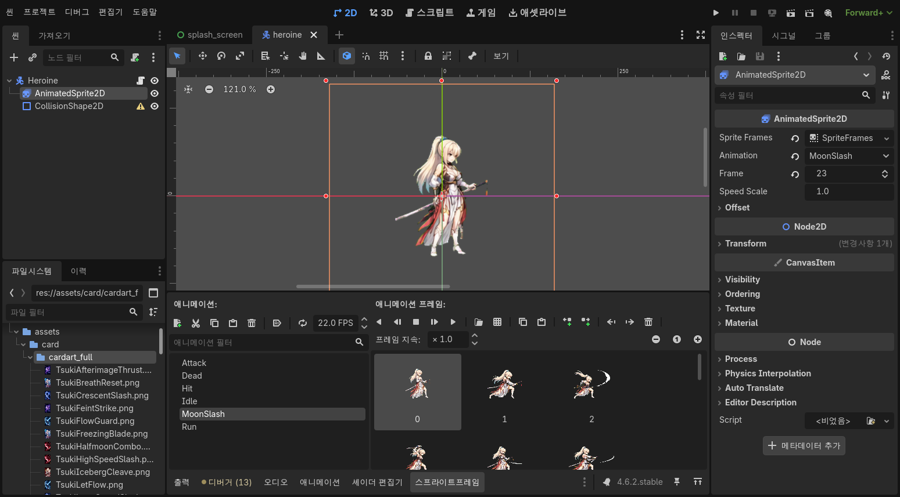
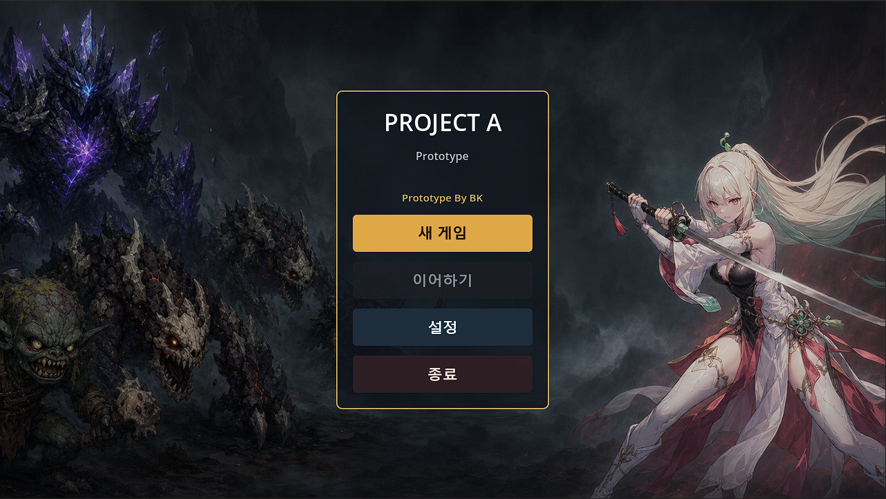
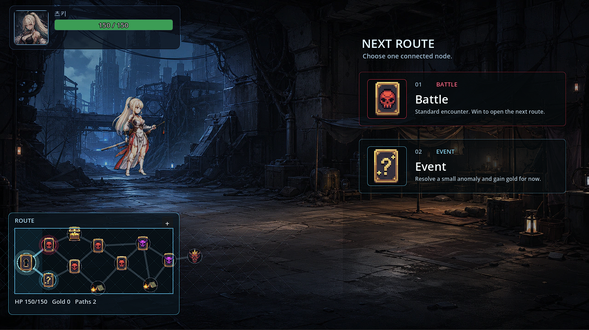
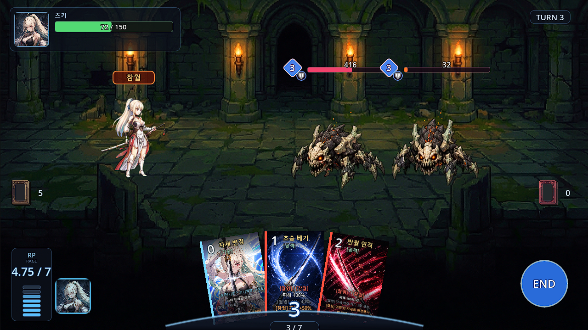
플레이 영상
직접 개발한 빌드의 실제 전투 장면입니다. 이미지를 클릭하면 확대해서 볼 수 있습니다.


진행 작업
드로우, 카드 사용, 캐릭터 행동, 몬스터 행동, 카드 버리기, 필살기, 애니메이션, 승리, 사망 등 전투가 한 흐름으로 이어지도록 구성했습니다.
캐릭터의 콘셉트, 카드 구성, 키워드 등을 기획·구현하여 의도대로 전투가 흘러가는지 확인했습니다.
행동 카운트, 패턴 예고, 전투 노드 진입, 사망 처리까지 몬스터가 전투 안에서 작동하는 기본 구조를 만들었습니다.
카드 설명과 실제 효과가 동일한 데이터를 참조하도록 카드, 효과, 조건, 자세 정보를 분리했습니다.
캐릭터 기획 : 츠키
츠키는 월영과 참월 자세를 오가며 안정적인 운영과 공격적인 마무리 사이를 선택하는 카드형 전투 캐릭터입니다.
츠키는 레퍼런스 게임 카오스 제로 나이트메어에서 가장 인상 깊었던 하이데마리의 분위기와 매력을 오마주하되, 전용 스킬을 새로 기획·제작해 차별화한 캐릭터입니다.
월영과 참월을 오가며 패를 안정적으로 돌릴지, 추가 타격으로 몰아칠지 계속 선택하게 만드는 캐릭터입니다.
방어와 카드 생성에 강해 다음 턴 선택지를 넓혀 주는 자세입니다.
추가 타격과 피해 증가로 공격 템포를 끌어올리는 자세입니다.
같은 카드라도 현재 자세에 따라 쓰임이 달라지게 했습니다. 손패를 바로 쓰는 데서 끝나지 않고, 다음 자세와 다음 턴까지 함께 보게 만들고 싶었습니다.
월영으로 버티며 준비하고, 자세를 바꾼 뒤 참월에서 추가 타격과 피해 증가로 마무리하는 흐름을 의도했습니다.
츠키 카드 구성
모든 카드는 월영/참월 키워드를 함께 가지고 있으며, 현재 자세에 따라 더 두드러지는 효과가 달라집니다.
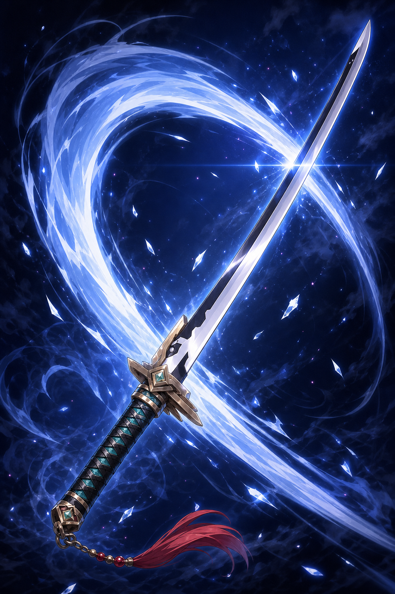
비용 1피해 100%.
[월영] 실드 40%.
[참월] 피해 +50%.
기획 의도기본 공격 카드입니다. 월영에서는 생존을 챙기고, 참월에서는 피해량을 더하여 자세 차이를 바로 느낄 수 있도록 했습니다.
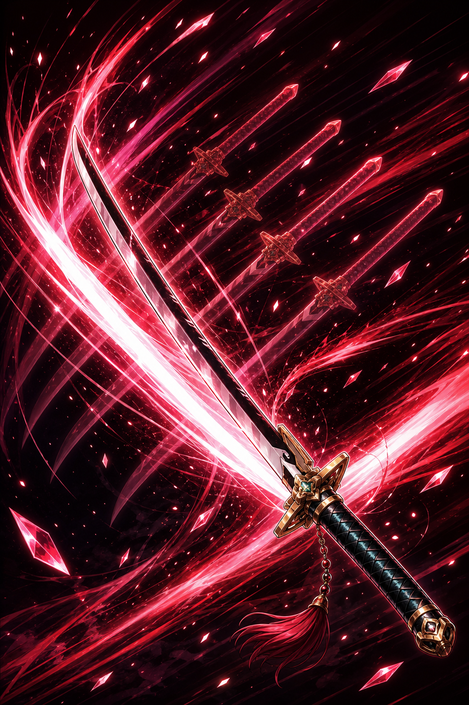
비용 2피해 100% x2.
[월영] 자세 변경 카드 1장 생성.
[참월] 이번 턴 자세를 변경했다면 피해 +30%.
기획 의도자세를 바꾼 뒤 공격하는 플레이를 보상하는 연계 카드입니다. 월영에서는 전환 수단을 만들고, 참월에서는 조건부 피해 증가로 콤보가 완성되는 느낌을 주고자 했습니다.
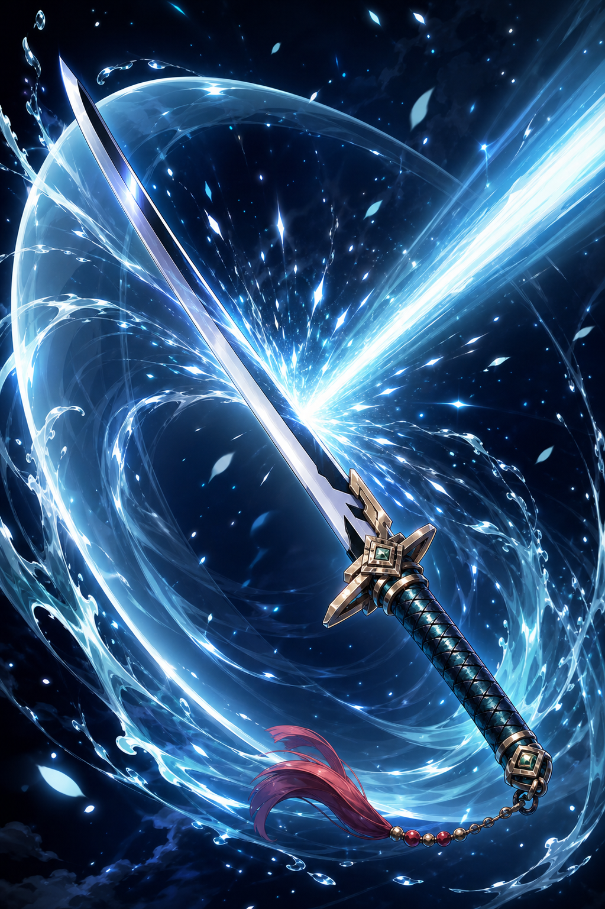
비용 1실드 100%.
[월영] 카드 1장 뽑기.
[참월] 이번 턴 공격 피해 +20%.
기획 의도적 공격을 받아내는 수비 카드입니다. 월영에서는 패 순환으로, 참월에서는 공격 버프로 이어지도록 했습니다.
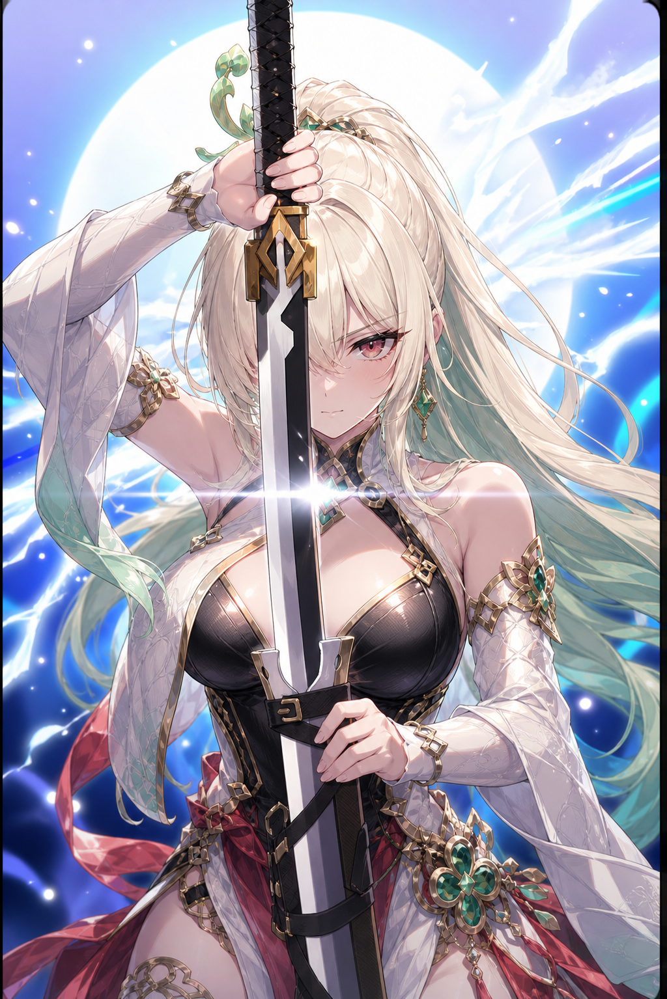
비용 0[보존 / 회수 2] 반대 자세로 변경.
[월영] 자세 유지 : 매 턴 카드 1장 뽑기.
[참월] 자세 유지 : 공격 피해 +25%.
기획 의도츠키 덱의 중심이 되는 카드입니다. 보존과 회수 2를 통해 필요한 순간까지 손패에 남겨 두었다가 자세를 바꾸고, 그 전환 자체가 운영이냐 공격이냐를 가르는 판단이 되도록 했습니다.
피해 80% x2.
[월영] 자세 변경 카드 1장 생성.
[참월] 피해 80%를 1회 추가.
기획 의도기본은 안정적인 2회 타격 카드로 두었습니다. 월영에서는 다음 자세 전환을 준비하고, 참월에서는 바로 타격 수를 늘려 공격 자세의 고점을 보여줍니다.
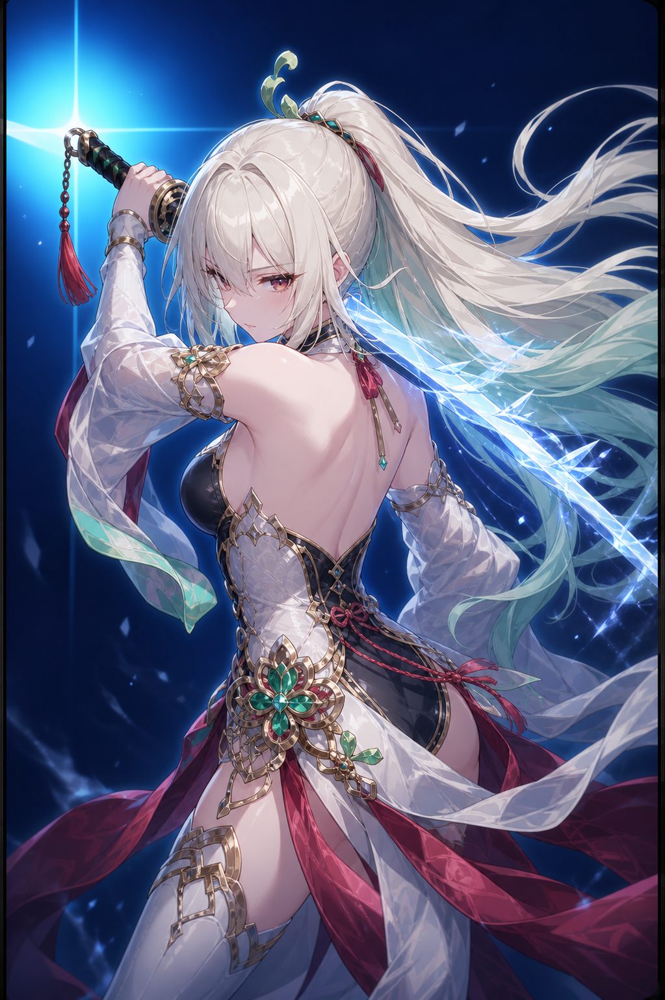
비용 0카드 2장 뽑기.
[월영] 실드 40%.
[참월] 행동 포인트 1 획득.
기획 의도패가 막혔을 때 다시 선택지를 열어 주는 순환 카드입니다. 월영에서는 안정성을 보태고, 참월에서는 추가 행동으로 이어져 현재 자세에 맞는 회복감을 줍니다.
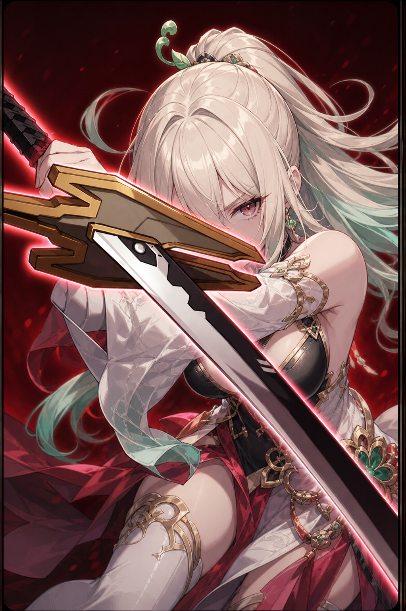
비용 2모든 적 피해 120%.
[월영] 실드 60%.
[참월] 1회 추가 타격.
기획 의도다수 적 상황에서 전투 흐름을 정리하는 광역 카드입니다. 월영에서는 위험을 줄이며 쓰고, 참월에서는 추가 타격으로 마무리 성능을 높입니다.
츠키 액션 프리뷰
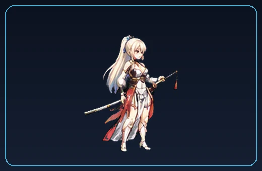
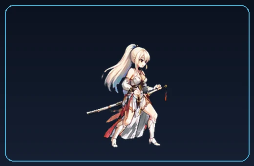
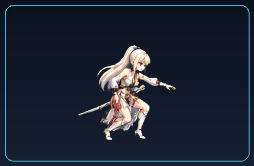
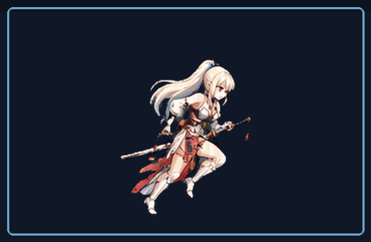
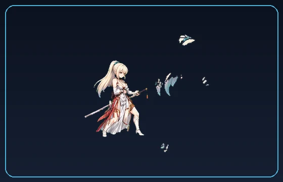
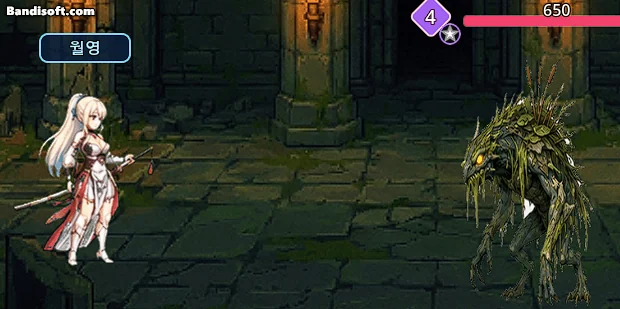
몬스터 기획
카드와 자원을 어떤 순서로 사용할지 판단하도록 기획했습니다. 일반 몬스터는 공격, 방어, 상태 이상의 기본 대응을 학습시키고, 엘리트와 보스는 특수 기술, 강화, 방어, HP 분기 패턴을 통해 우선순위와 마무리 타이밍을 고민하도록 설계했습니다.
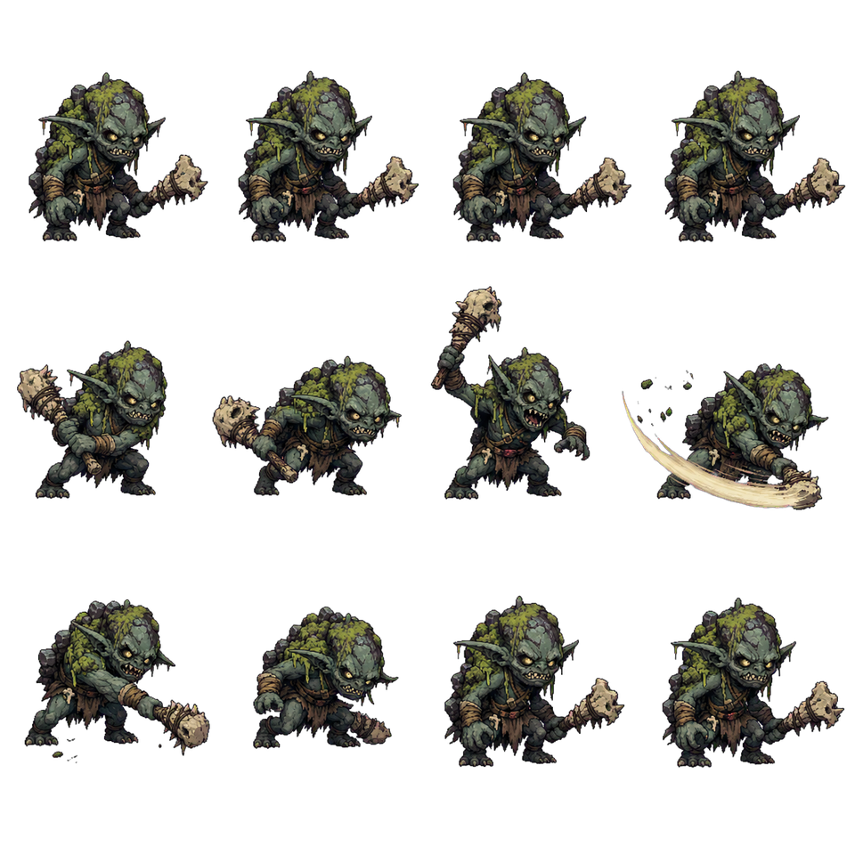
몬스터의 다음 행동과 남은 카운트를 UI에 보여주고, 플레이어가 방어할지 공격할지, 자세를 바꿀지 미리 판단하게 했습니다.
기본 공격, 방어, 강화, 지속 피해, 동결, 서포터, 보스 분기처럼 몬스터마다 다른 압박 방식을 부여해 전투마다 우선순위 판단이 달라지도록 했습니다.
같은 몬스터라도 시작 행동, 행동 카운트, 등장 위치, 체력/공격 배율을 다르게 설정해 전투 노드마다 다른 압박을 줄 수 있도록 구성했습니다.
몬스터 리스트

- 휘두르기
- 기본 공격입니다.
- 웅크리기
- 자신에게 방어도를 부여합니다.
- 낄낄대기
- 다른 몬스터의 행동 카운트를 1 감소시킵니다.

- 늪독 바르기
- 자신의 다음 공격에 [고통] 1을 추가합니다.
- 찌르기
- 기본 공격입니다.
- 잠복 기습
- 더 강한 공격을 합니다.

- 해골 강타
- 강한 선공 공격입니다.
- 뼈 재조립
- 자신에게 방어도를 부여합니다.
- 금 간 뼈
- 자신의 다음 공격 피해를 강화합니다.

- 흙 갑옷
- 자신에게 높은 방어도를 부여합니다.
- 무덤 물어뜯기
- 기본 공격입니다.
- 망자의 강골
- 자신의 다음 공격 피해를 강화합니다.

- 사기
- 자신의 다음 공격 피해를 강화합니다.
- 얼음 칼날
- 기본 공격입니다. 피격 대상에게 [얼음 결정] 1개를 부여하며, [얼음 결정]이 3개가 되면 대상은 1턴 동안 [동결] 상태가 됩니다.
- 얼음 갑옷
- 자신에게 높은 방어도를 부여합니다.

- 단죄 선포
- 다른 몬스터의 공격력을 증가시킵니다.
- 심판의 일격
- 기본 공격입니다.
- 깊은 신앙
- 다른 몬스터를 회복시킵니다.

- 왕관 분쇄
- 강한 공격입니다.
- 왕관 방벽
- 자신에게 높은 실드를 부여합니다.
- 왕관의 권능
- 다음 공격 피해를 강화합니다.
- 심연의 칙령
- 가장 강한 공격입니다.
- 심연 수호
- 강한 공격 이후 자신에게 실드를 부여합니다.
- 카드 흡수
- Player의 카드를 흡수해 체력을 회복합니다.
- HP 70% 이하
- 한 번만 왕관의 권능 단계로 전환해 강화 공격 흐름을 앞당깁니다.
- HP 40% 이하
- 한 번만 심연의 칙령 단계로 전환해, 마무리를 서두를지 방어 자원을 남길지 판단하게 만듭니다.
데이터 테이블
캐릭터 카드, 효과, RP, 몬스터 행동, 패턴, 조건 분기를 실제 전투 데이터와 연결해 정리했습니다.
캐릭터 데이터 작업 구조
4-1. CharacterStats
캐릭터의 기본 전투 스탯과 전투 시작 자원을 관리하는 캐릭터 기준 테이블.
| 컬럼 | 데이터 | 내용 |
|---|---|---|
| ID | key,int,origin | 캐릭터를 구분하는 유니크 키 값. 예: tsuki |
| DisplayName | string | 전투 UI와 캐릭터 카드에 노출되는 이름. 예: 츠키 |
| MaxHP | int | 캐릭터의 기본 최대 체력. 예: 100 |
| AttackPower | int | 공격 카드 피해 산식에 사용되는 기준 공격력. 예: 150 |
| DefensePower | int | 실드와 방어 산식에 사용되는 기준 방어력. 예: 50 |
| StartingEnergy | int | 전투 시작 시 보유하는 행동 포인트. 예: 3 |
| CritRate | float | 기본 치명타 확률. 예: 0.05 |
| CritDamage | float | 치명타 피해 배율. 예: 1.5 |
4-2. CharacterCards
캐릭터 카드의 기본 정보, 비용, 카드 타입, 출력 텍스트를 관리하는 기준 테이블.
| 컬럼 | 데이터 | 내용 |
|---|---|---|
| CardKey | key,int,origin | 캐릭터와 카드를 함께 구분하는 유니크 키 값. 예: tsuki/stance_shift |
| Character | key,string | 카드를 사용할 캐릭터 키. CharacterStats.ID를 참조. 예: tsuki |
| ID | key,string | 캐릭터 안에서 카드를 구분하는 내부 ID. 예: crescent_slash, halfmoon_combo |
| DisplayName | string | 전투 UI와 카드 이미지에 노출되는 카드 이름. |
| Cost | int | 카드 사용에 필요한 행동 포인트. 예: 자세 변경은 0, 반월 연격은 2 |
| CardType | enum | 카드 분류. attack 또는 skill을 입력. |
| MotionAnimation | string | 카드 사용 시 재생할 캐릭터 애니메이션. 예: Attack, Idle |
| TextTemplate | string | 카드 설명 템플릿. CardEffectRows의 TextArgIndex와 연결해 수치를 치환. |
| Keywords | string[] | 카드에 붙는 키워드 목록. 예: 보존, 회수 2, 월영, 참월 |
4-3. CardEffectRows
카드 한 장 안에 들어가는 개별 효과, 발동 조건, 자세별 분기를 관리하는 효과 행 테이블.
| 컬럼 | 데이터 | 내용 |
|---|---|---|
| ID | key,int,origin | 효과 행을 구분하는 유니크 키 값. 예: tsuki_stance_shift_sun_buff |
| CardKey | key,string | CharacterCards.CardKey를 참조해 효과가 붙을 카드를 지정. |
| Trigger | enum | 효과 발동 시점. on_play, on_stance 등을 입력. |
| Stance | enum/null | 자세 조건. 공통 효과는 null, 자세별 효과는 월영 또는 참월을 입력. |
| EffectType | enum | 효과 종류. damage, shield, draw, buff, stance_change, add_card_to_hand 등. |
| Target | enum/null | 효과 대상. enemy, all_enemies, self 등을 입력. |
| Percent / Amount | int/null | 피해, 실드, 드로우, 행동 포인트 등 효과 수치. |
| Condition | string/null | 조건부 효과 설명. 예: 이번 턴 자세 변경 여부 확인. |
| TextArgIndex | int | CharacterCards.TextTemplate의 {n} 위치에 들어갈 수치 인덱스. |
4-4. CardEffects
카드 키워드의 의미와 카테고리를 관리하는 키워드 설명 테이블.
| 컬럼 | 데이터 | 내용 |
|---|---|---|
| Keyword | key,int,origin | 키워드 이름. CharacterCards.Keywords에서 참조. 예: 보존, 회수 |
| Category | enum/string | 키워드 분류. 카드사용, 이로운 등으로 구분. |
| Description | string | 키워드의 실제 규칙 설명. 예: 보존은 턴 종료 시 버려지지 않음. |
4-5. CharacterRPSettings
캐릭터별 RP 최대치와 획득 규칙을 관리하는 필살기 자원 테이블.
| 컬럼 | 데이터 | 내용 |
|---|---|---|
| Character | key,int,origin | RP 규칙을 적용할 캐릭터 키. CharacterStats.ID를 참조. 예: tsuki |
| MaxRP | float | 보유 가능한 최대 RP. 츠키는 7. |
| StartingRP | float | 전투 시작 시 보유 RP. 츠키는 3. |
| RPPerEnemyKill | float | 적 처치 시 획득하는 RP. |
| RPPerActionPoint | float | 행동 포인트 사용량에 따라 획득하는 RP. |
| RPPerEndTurn | float | 턴 종료 시 획득하는 RP. |
4-6. CharacterRPSkills
RP를 소비해 사용하는 캐릭터 필살기와 연출 정보를 관리하는 테이블.
| 컬럼 | 데이터 | 내용 |
|---|---|---|
| ID | key,int,origin | 필살기 ID. 예: moon_slash |
| Character | key,string | 필살기를 사용할 캐릭터 키. CharacterStats.ID를 참조. 예: tsuki |
| DisplayName | string | 전투 UI에 표시되는 필살기 이름. 예: 달빛 베기 |
| RPCost | float | 필살기 사용에 필요한 RP 비용. |
| DamagePercent | float | 타격 1회당 피해 배율. |
| HitCount | int | 필살기 타격 횟수. Moon Slash는 5회 타격. |
| Target | enum | 공격 대상. 예: all_enemies |
| MotionAnimation / VFXID | string | 필살기 모션과 VFX 리소스 연결 키. |
몬스터 데이터 작업 구조
4-7. MonsterDefinitions
몬스터의 표시 정보, 씬, 기본 스탯/패턴 연결을 관리하는 기준 테이블.
| 컬럼 | 데이터 | 내용 |
|---|---|---|
| MonsterID | key,int,origin | 몬스터를 구분하는 유니크 키 값. 예: mire_imp, frost_revenant |
| DisplayName | string | 전투 UI에 노출되는 몬스터 이름. |
| StatsID | key,string | MonsterCombatStats.StatsID를 참조해 체급 데이터를 연결. |
| DefaultPatternID | key,string | MonsterPatterns.PatternID를 참조해 기본 행동 루프를 연결. |
| ScenePath | string | Godot에서 로드할 몬스터 씬 경로. 예: res://scenes/monster/monster_mire_imp.tscn |
| DesignerNote | string | 몬스터의 기획 역할과 운용 의도를 기록. |
4-8. MonsterCombatStats
몬스터의 기본 체력, 공격력, 방어력을 관리하는 밸런싱 테이블.
| 컬럼 | 데이터 | 내용 |
|---|---|---|
| StatsID | key,int,origin | 스탯 묶음을 구분하는 유니크 키 값. MonsterDefinitions.StatsID에서 참조. |
| MaxHP | int | 몬스터의 최대 체력. 예: 심연 왕관 수호자 2500 |
| Attack | int | 공격 행동의 기준 공격력. AttackPercent 계열 행동의 산식 기준값. |
| Defense | int | 방어 행동의 기준 방어력. DefensePercent 계열 행동의 산식 기준값. |
| DesignerNote | string | 스탯 배분 의도. 예: 엘리트 내구 확보, 온보딩용 낮은 방어 등. |
4-9. MonsterActions
몬스터가 사용할 수 있는 공격, 방어, 버프, 특수 행동을 정의하는 액션 테이블.
| 컬럼 | 데이터 | 내용 |
|---|---|---|
| ActionID | key,int,origin | 행동을 구분하는 유니크 키 값. MonsterPatterns.ActionID에서 참조. |
| DisplayName | string | 전투 예고 UI에 표시되는 기술명. 예: 해골 강타, 심연 선고 |
| ActionType | enum | 행동 분류. attack, defense, buff, skill 중 하나를 입력. |
| TargetType | enum | 대상 분류. player 또는 self를 입력. |
| PowerType | enum | 수치 산식 타입. attack_percent, defense_percent, flat, count_delta 등. |
| PowerValue | int | 행동 수치. 예: judgement는 attack_percent 180, mire_imp_giggle은 count_delta -1 |
| IconLabel | string | 전투 예고 아이콘 라벨. 예: ATK, DEF, BUF, SKL |
4-10. MonsterPatterns
행동 순서, 행동 카운트, 다음 단계 이동을 관리하는 패턴 테이블.
| 컬럼 | 데이터 | 내용 |
|---|---|---|
| PatternStepID | key,int,origin | 패턴 단계 행을 구분하는 유니크 키 값. |
| PatternID | key,string | 동일 몬스터의 패턴 묶음 키. MonsterDefinitions.DefaultPatternID에서 참조. |
| StepID | key,string | 패턴 안에서 현재 단계를 구분하는 키. 예: start, after_swing, after_armor |
| ActionID | key,string | MonsterActions.ActionID를 참조해 해당 단계에서 사용할 행동을 연결. |
| ActionCount | int | 행동 발동까지 남은 카운트. 짧을수록 대응 시간이 줄어듦. |
| NextStepID | key,string | 행동 처리 후 이동할 다음 StepID. |
| Note | string | 패턴 단계의 기획 메모. 예: 공격 후 방어를 보여줌, 강공격 전 빈틈 등. |
4-11. MonsterRules
HP 조건 등으로 패턴 단계를 바꾸는 분기 규칙 테이블.
| 컬럼 | 데이터 | 내용 |
|---|---|---|
| RuleID | key,int,origin | 규칙을 구분하는 유니크 키 값. |
| PatternID | key,string | 분기를 적용할 패턴 묶음 키. MonsterPatterns.PatternID와 연결. |
| TriggerType | enum | 분기 조건 타입. 현재는 hp_below_ratio를 사용. |
| TriggerValue | float | 조건 수치. 예: 0.5는 HP 50% 이하를 의미. |
| SetStepID | key,string | 조건 만족 시 이동할 PatternStep. 예: giggle, after_ice_blade |
| Priority | int | 여러 규칙이 동시에 성립할 때 적용 우선순위. |
4-12. MonsterEncounters
전투 노드에 등장할 몬스터, 시작 패턴 단계, 위치와 배율을 배치하는 인카운터 테이블.
| 컬럼 | 데이터 | 내용 |
|---|---|---|
| EncounterID | key,int,origin | 전투 구성을 구분하는 유니크 키 값. 예: enc_mire_imp_4 |
| SlotID | int | 같은 인카운터 안에서 몬스터 배치 순서를 구분. |
| MonsterID | key,string | MonsterDefinitions.MonsterID를 참조해 등장 몬스터를 지정. |
| StartStepID | key,string | 전투 시작 시 사용할 패턴 단계. 같은 몬스터도 시작 행동을 다르게 배치 가능. |
| PositionX / Y | int | 전투 화면 내 몬스터 배치 좌표. |
| HPMultiplier | float | 해당 인카운터에서 체력 배율을 조정. |
| AttackMultiplier | float | 해당 인카운터에서 공격 배율을 조정. |